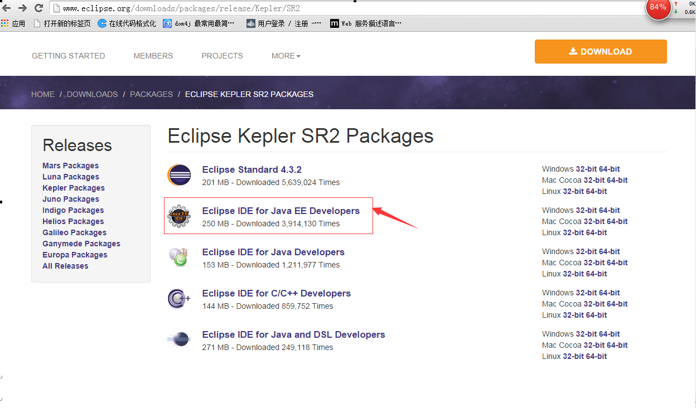
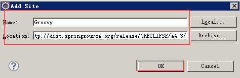
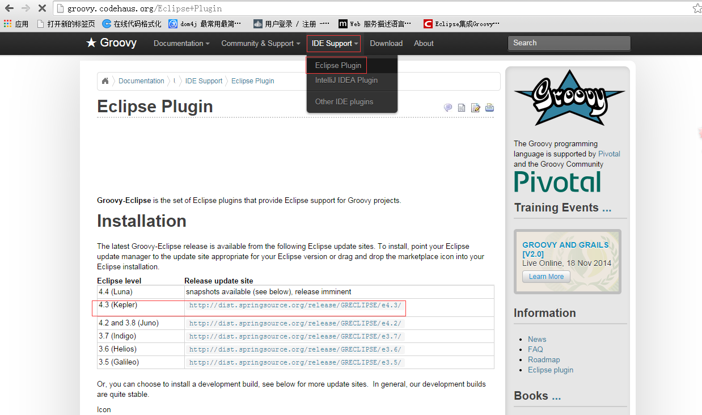
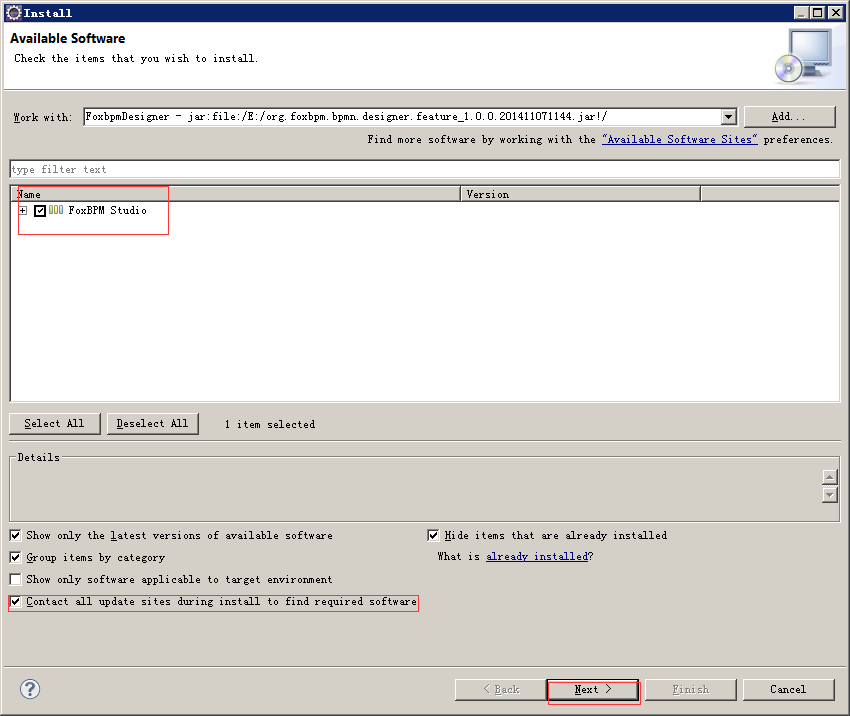
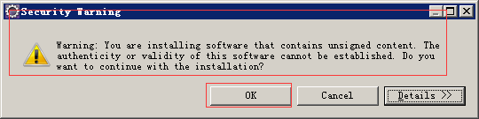
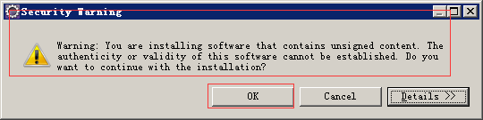
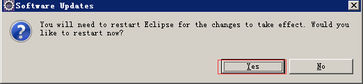
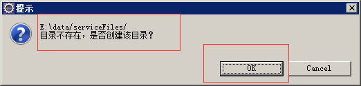
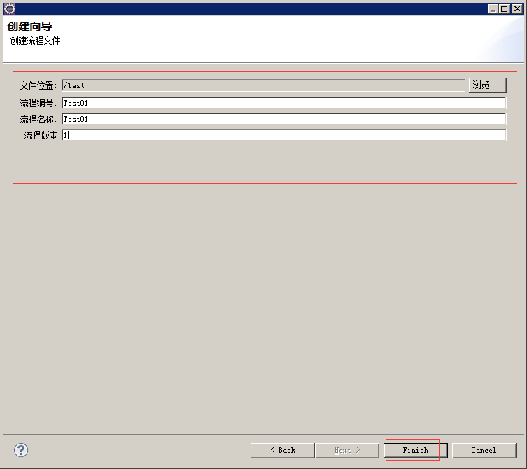

安装
-
前置条件
最新的设计器插件包、foxbpm-common.war。
-
打开Eclipse的官网，进入下载页面。地址：http://eclipse.org/downloads/
点击如图右方所示红框部分，进入Juno或Kepler版本的下载界面(下面以Kepler为例)。
-
点击如图红框部分进入Kepler版本的下载界面。

-
如图所示选择Kepler的Java EE版本下载。
 -
如图所示选择对应本机系统的版本。

-
解压下载好的文件，打开Eclipse。
如图所示点击右上角的帮助(Help)菜单，选择安装新软件(Install New Software)。
-
如果是首次安装，需要添加Graphiti和Groovy两个个站点信息(如果已经存在（url一致）的话可以不添加)。


点击添加。

1：添加Graphiti站点信息(http://download.eclipse.org/graphiti/updates/0.10.2)。

1：添加Groovy站点信息(http://dist.springsource.org/release/GRECLIPSE/e4.3/)。

注意
Groovy站点地址：这里Groovy插件版本必须要和Eclipse版本一致。
Groovy官网：http://groovy.codehaus.org/
 -
继续点击添加，安装我们设计器插件。
在弹出的Add Repository窗口中填写如下：
注意
这里点击Archire选择本地设计器插件包。
添加好之后点击确定，点击下一步。
显示安装信息，直接点击下一步。
在许可信息这点击同意并点击完成。

注意
插件安装过程中需要上网下载需要的依赖jar包可能有些缓慢，以及如果出现以下提示直接重新安装即可（网络导致超时）。
 
 -
安装完毕后会提示重启信息，我们选择重启。
 -
重启完成后，看到流程设置的菜单后，表示平台已经顺利安装成功。

-
打开windows-preferences-流程设计器配置,为设计器配置rest服务地址，此目的是为了同步项目中用到的所有资源。

服务地址：此地址需要根据自己项目web.xml中配置的rest服务而确定，foxbpm-webapps-common中rest服务前缀默认为 service/，所以此处写http://localhost:8080/foxbpm-webapps-common/service。
解压路径：资源的本地路径，建议新建文件夹。 然后点击同步按钮，如果配置没有问题，则会提示同步成功，否则会提示相关错误信息。
说明：这里我已经部署好foxbpm-webapps-common服务，所以以上直接配置。
-
点击设计器同步。

点击Ok完成目录创建。
点击Ok进行目录清空。

-
点击Ok完成。

-
创建一个工程(随便创建一个工程主要是用来存放流程文件而已)，这里我创建一个java工程项目Test。
选中Test项目鼠标右击New-->Other-->Foxbpm-->新建FoxBPM流程并点击下一步。

-
出现创建向导页面，使用默认模板，点击下一步。

-
出现创建向导页面，填写编号、名称、版本(数字)，点击完成。
 -
完成后自动打开创建的流程文件,说明设计器插件已经可以正常使用。

-
验证groovy表达式是否可正常使用。
aa
-
说明：该设计器插件均在kepler、Juno版本的Eclipse 安装通过。